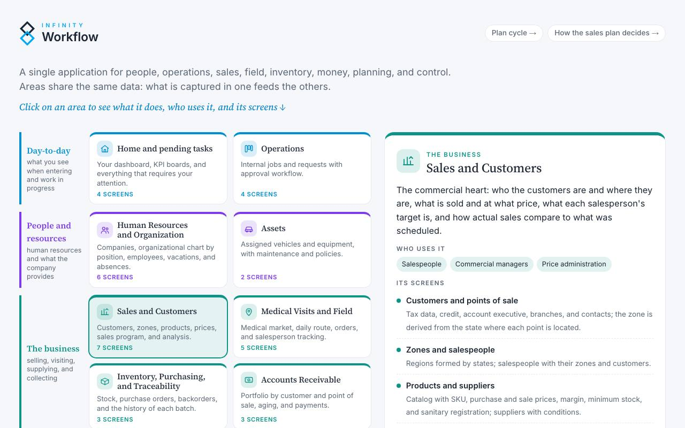
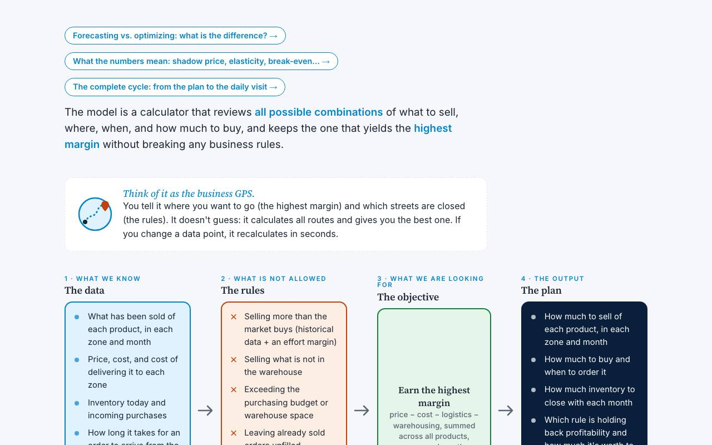
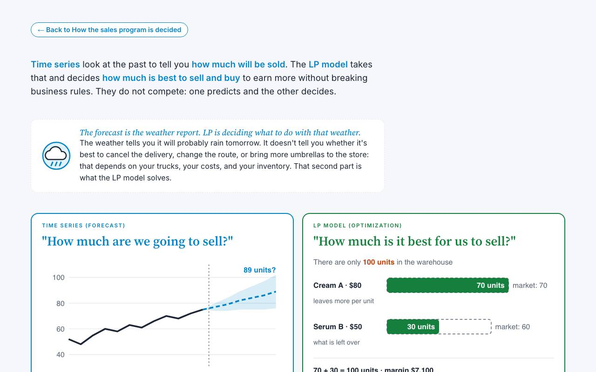
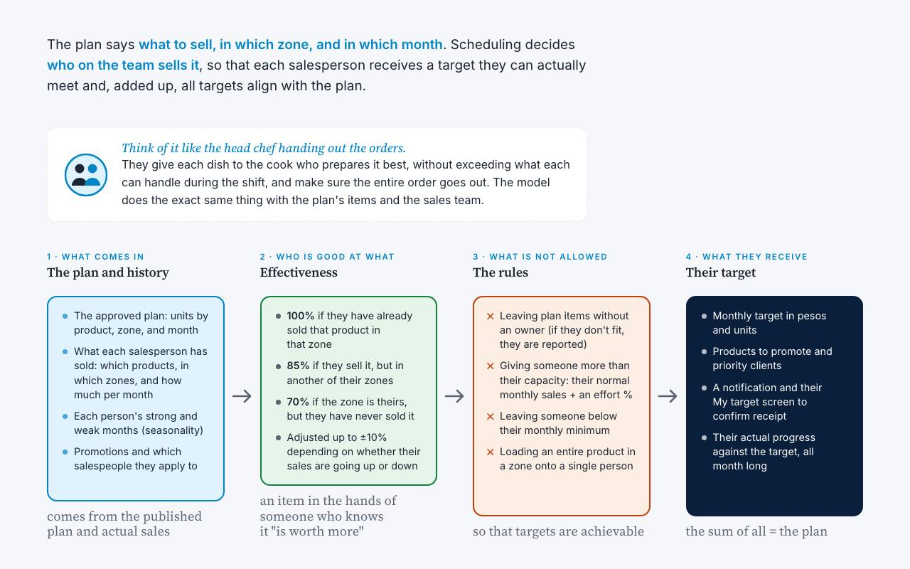
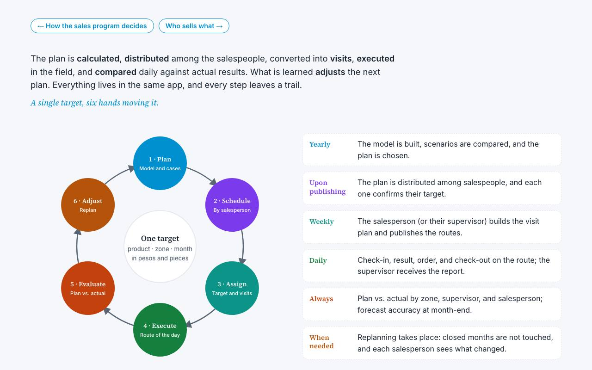
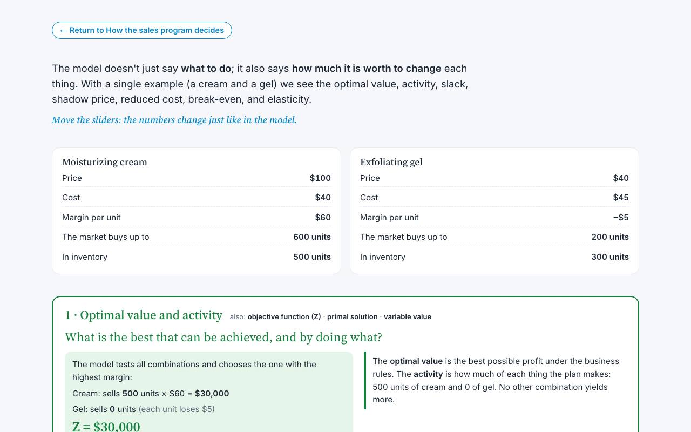

Ideas you can put into operation.
How we think about planning and operations: sketches that explain, with a concrete example, the ideas behind our work and Infinity Workflow.

Draft · Application MapInfinity Workflow Map

Sales planningHow the Sales Program is Decided
The model is a calculator that reviews all possible combinations of what to sell, where, when, and how much to buy, and keeps the one that yields the highest margin without breaking any business rules.

Two ways to planForecast or optimize
Time series look at the past to tell you how much will be sold. The LP model takes that and decides how much is best to sell and buy to earn more without breaking business rules. They do not compete: one predicts and the…

Zone and salesperson schedulingWho sells what
The plan says what to sell, in which zone, and in which month. Scheduling decides who on the team sells it, so that each salesperson receives a target they can actually meet and, added up, all targets align with the plan…

Planning · The Complete CyclePlan cycle
The plan is calculated, distributed among the salespeople, converted into visits, executed in the field, and compared daily against actual results. What is learned adjusts the next plan. Everything lives in the same app,…

Planning · how to read the resultsModel values
The model doesn't just say what to do; it also says how much it is worth to change each thing. With a single example (a cream and a gel) we see the optimal value, activity, slack, shadow price, reduced cost, break-even, …